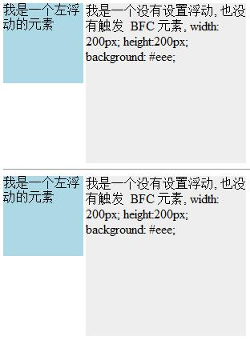
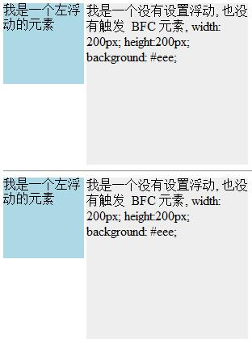
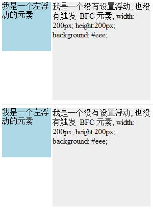

bfc01-效果截图
bfc02-效果截图
bfc03-效果截图
bfc04-效果截图

代码
<!DOCTYPE html> <html lang="zh_cn"> <head> <meta charset="UTF-8"> <title>Block Formating Content</title> <style> .div{ width: 100px; height: 100px; background: lightblue; margin: 100px; } .container { overflow: hidden; } p { width: 100px; height: 100px; background: lightblue; margin: 100px; } .effect{ border: 1px solid gray; } img{ border: 1px dotted lightskyblue; } textarea{ width: 100%; height: auto; min-height: 200px; border: 1px solid gold; } </style> </head> <body> <h1>触发条件</h1> <h2> body 根元素<br> 浮动元素：float 除 none 以外的值<br> 绝对定位元素：position (absolute、fixed)<br> display 为 inline-block、table-cells、flex<br> overflow 除了 visible 以外的值 (hidden、auto、scroll) </h2> <a href="BlockFormatingContentDesc.html">shortcut</a> <hr> <h3>同一个BFC下外边距会发生折叠</h3> <div class="div"></div> <div class="div"></div> <hr> <h3>放到两个不同的BFC下不会发生边距折叠</h3> <div class="container"> <p></p> </div> <div class="container"> <p></p> </div> <hr> <h3>触发BFC使容器包含浮动元素</h3> <div style="border: 1px solid #000;"> <div style="width: 100px;height: 100px;background: #eee;float: left;"></div> </div> <div style="clear: left"></div> <hr> <div style="border: 1px solid #000;overflow: hidden"> <div style="width: 100px;height: 100px;background: #eee;float: left;"></div> </div> <hr> <h3>触发BFC阻止文字被浮动元素覆盖</h3> <div style="height: 100px;width: 100px;float: left;background: lightblue">我是一个左浮动的元素</div> <div style="width: 200px; height: 200px;background: #eee">我是一个没有设置浮动, 也没有触发 BFC 元素, width: 200px; height:200px; background: #eee;</div> <hr> <div style="height: 100px;width: 100px;float: left;background: lightblue">我是一个左浮动的元素</div> <div style="width: 200px; height: 200px;background: #eee;overflow: hidden;">我是一个没有设置浮动, 也没有触发 BFC 元素, width: 200px; height:200px; background: #eee;</div> </body> </html>


 
